Final Project
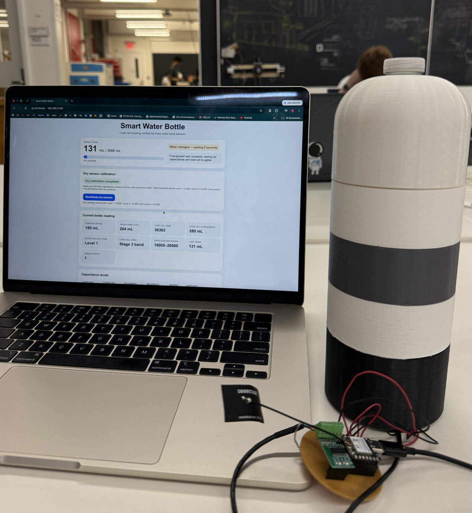
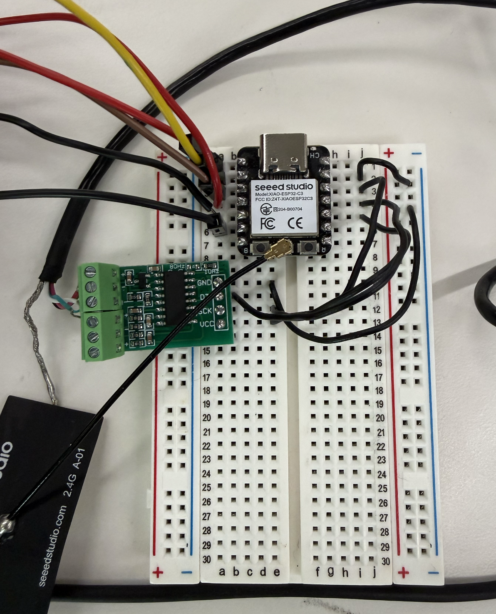
My final project is a water bottle that can track your daily drinking and can send reminders if you have not drunk in a certain amount of time I currently have most of physical parts completed with all the modules including the lid for the waterbottle case with the sensors wired up, the xiao and hx711(Load cell control) are also already on my own custom pcb according to the wiring in the breadboard shown above. I still have to attatch a battery which will be a 1100 mAh lithium ion battery which I will solder onto the xiao. I also still have to calibrate the water bottle a bit more as some data re unreliable and are lower than the actual data when measured with a scale.
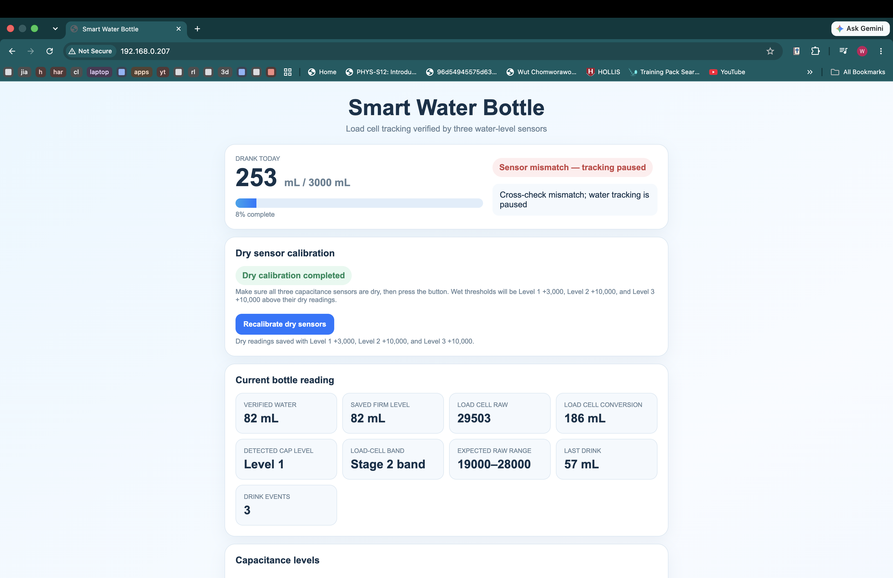
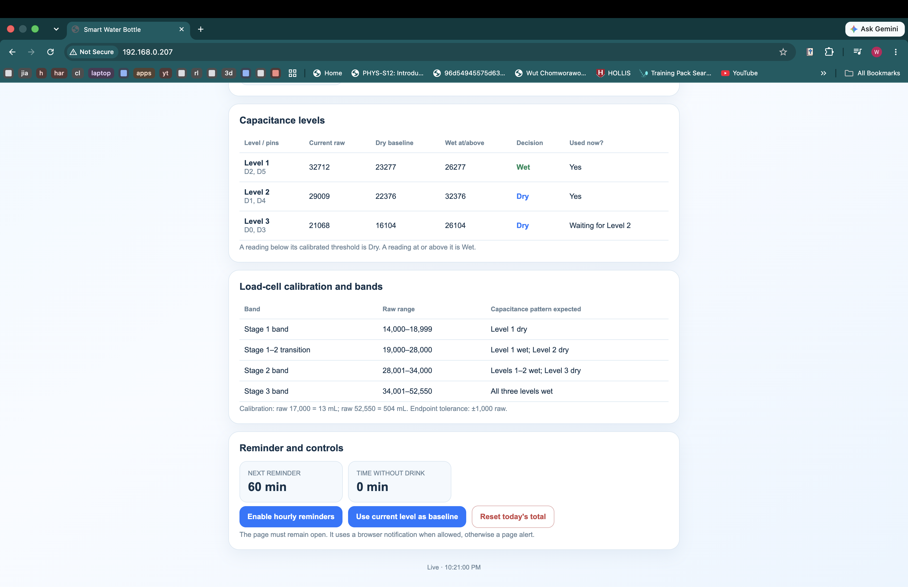
This is my homepage for data from the waterbottle, it is kind of messy right now as I still need the data to calibrate and finalize the code but the consumer version will be much more clean.
Hello world
Ideation
3D Printing
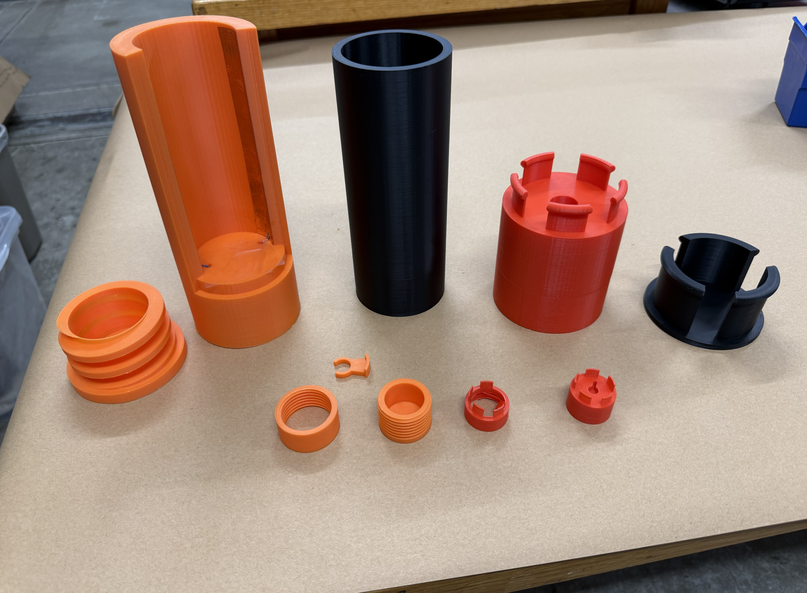
First Iterations
Click Me!Link to first project iteration
Second Iteration

I wanted to use both a weight sesnor and capacitance sensor so that the data would be more accurate as in my first iteration I only used the capacitance sensor which was very innaccurate, this means that I could not use the same clamp type of fit to fit the bottle with the case as I need the bottle to be able to move so that the weight sensor would work resulting in the second iteration.
Third Iteration

Third Iteration Base&Module
The third iteration is seperated into modules with a base that will be able to hold the load cell and have a compartment on the bottom that is able to hold the batteries and the PCB inside. The modular design works by using a press fit technique with an outward extrution on the connector part that matches with the negative space on the other module. I choose the modular design as it would help with the assembly process as it was extremely difficult to attatch the copper tape into the second iteration, but the modular design could also make it so that the waterbottle case would be able to fit more sizes of water bottles by just stacking more modules on top, it is also easier to repair and print if one module is broken in contrast to the entire thing to be one print.
Final Iteration
First: Base Module, Second: Bottom Module, Third: Module, Fourth: Cap Module(Top view), Fifth: Cap Module(Bottom View)
The third iteration was pretty decent, however the outward extrution used to form the joints for the press fit were too big which made it really hard to fit the modules together, the indentation for the load cell was also too small even after many attemtps to drill or sand down the print. This final version also reduces the need for a large printer that the first and second iterations needed by using seperate modules like in the third iteration. The final iteration has two more holes placed near the edge of joint for the wires connected to the capacitance sensor(Copper tape) to go through without interfering with the load cell which the third iteration lacked as it only has one hole.
Click Me!Link to Base Module STL
Click Me!Link to Bottom Module STL
Click Me!Link to Module STL
Click Me!Link to Cap Module STL
Load Cell Attatchment
Lasercut Loadcell Attatchment
The load cell that I had was kind of small and fit straight into the crevice in the bottom of most plastic bottles which made it totally useless. This is why I lasercut out an attatchment so that the weight of the waterbottle would be spread evenly across the attatchment on the load cell. The attatchment also fits pretty snugly with the base module so the load cell would not move around. The cut outs on the edge are so that the wires connceting to the capacitance sensor can go through the base module without interfering with the loadcell attatchment.
Click Me!Link to LoadCell Attatchment DXF
Test Parts
These are the parts I printed to test out different aspects and concepts
First: test wall and extrution for pressfit, Second: test threads, Third: Test water bottle clamp, Fourth: Scaled down third iteration, Fifth: test pressfit height and space between each extrution.
PCB/Circuit
Schematic
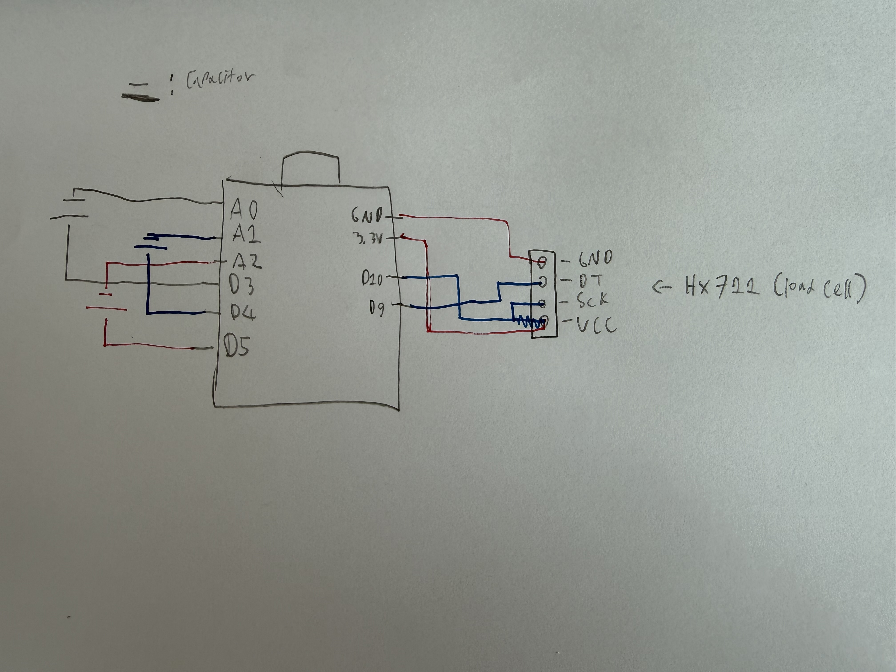
Circuit Schematic
A0 and D3 are pieces of copper tape opposite each other from the sides of the modules, A1 and D4 are paired in the same way, A2 and D5 are paired in the same way. D10 is connected to the SCK port on the HX711, D9 is connected to the DT port on the HX711, 3.3V is connected to the VCC port, and GND is connected to the GND port.
Breadboard
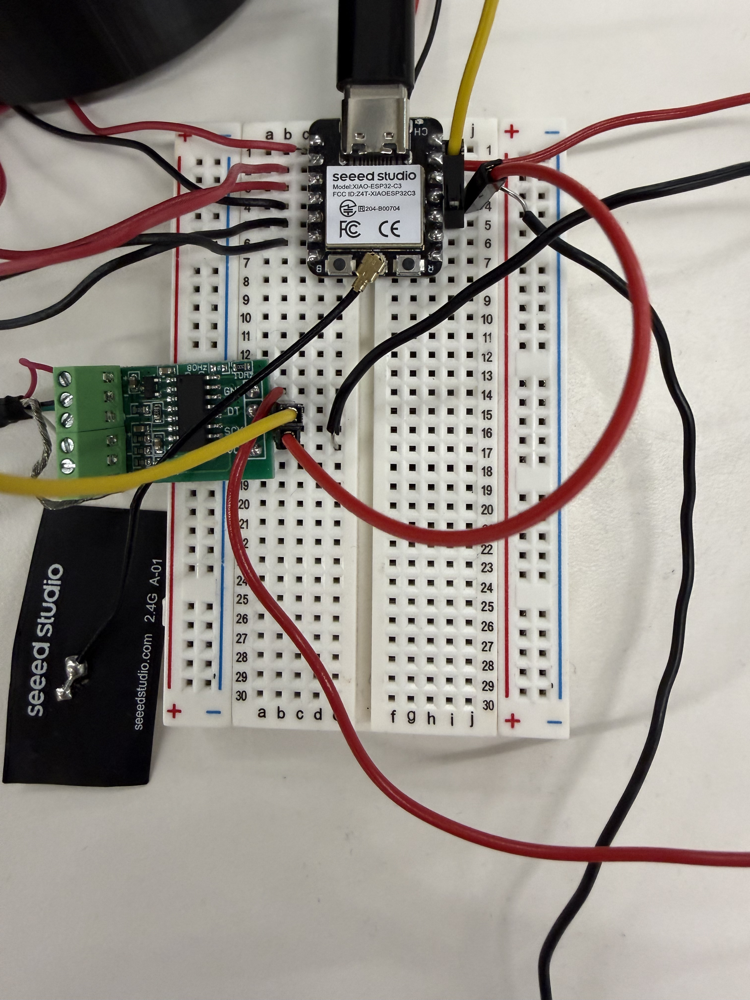
After planning everything out into a schematic I put all the components onto a breadboard to figure out if they function together well.
PCB
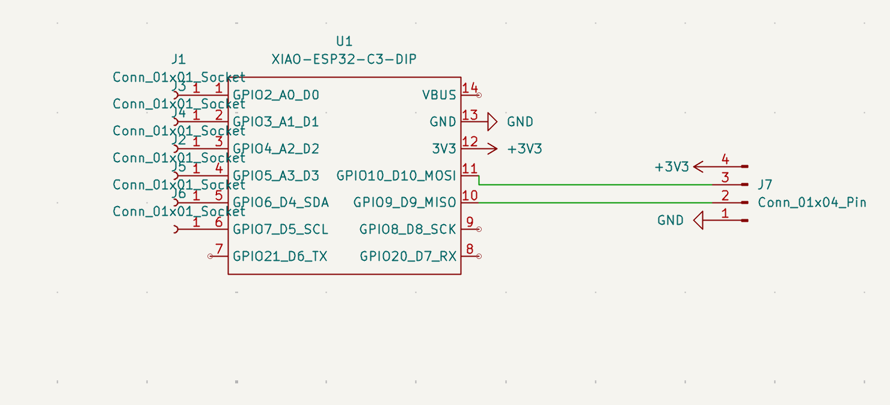
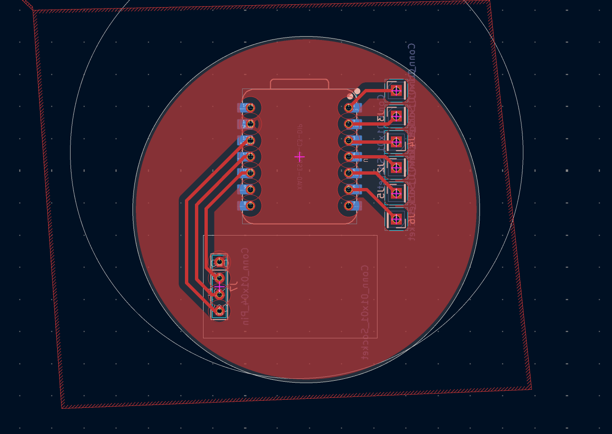
Left: KiCad Schematic, Right: KiCad PCB
I used KiCad to design my PCB, I first added everything to the schematic editor according to the drawn schematic above, I then connected everything together in the PCB editor before bringing the files into gerber2img to generate the renders you see below. I did all this according to the guide linked down below.
.png)
.png)
Left: Edgecuts, NPTH, PTH, Right: F_Cu
Click Me!Link to PCB tutorial
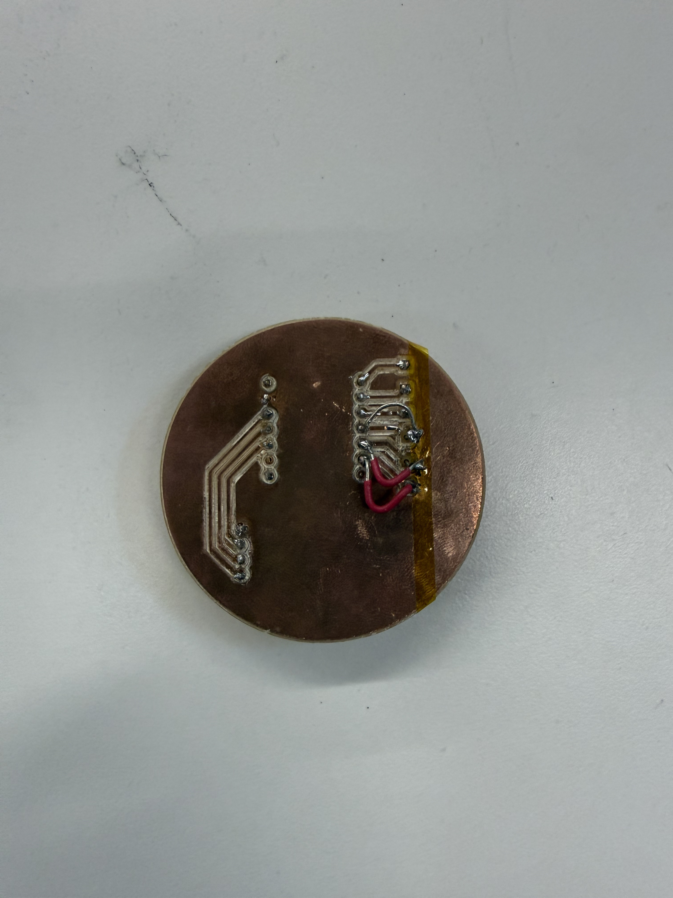
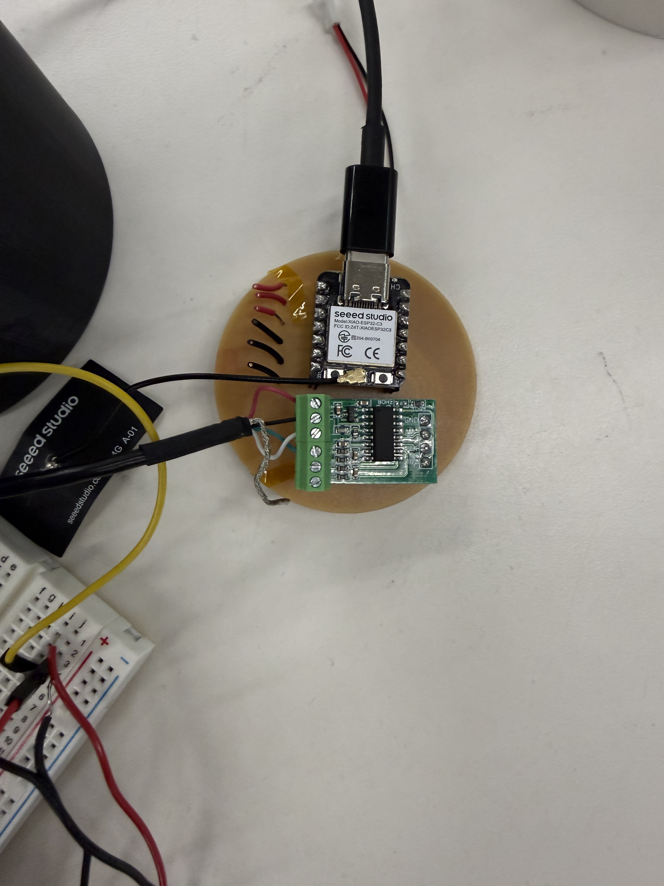
Left: Damaged PCB, Right: Assembled PCB
I was able to mill out the PCB and soldered the components on it worked really well on the first couple of days. However, on the day of the final project fair when I was setting up the copper connections on my PCB broke which I tried to fix by using jumper wires that you can see on the left picture However more problems soon occured like my load cell not working when plugged into my PCB even though all the connections were ligit and not shorting when tested with a multimeter.
Protoboard
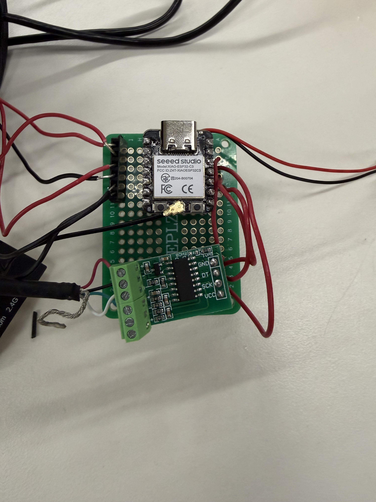
Soldered Protoboard
I had to make a last minute switch from my PCB to a protoboard because of the problems listed above. I wired the protoboard exactly the same as how I wired the breadboard.